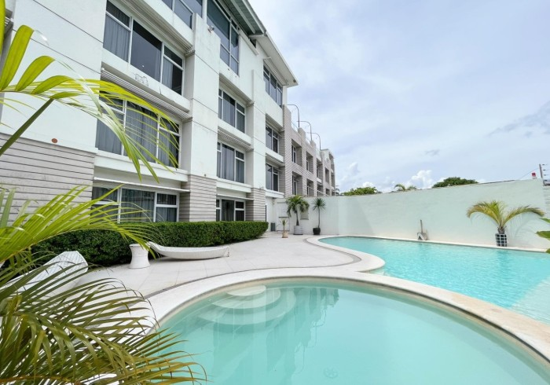
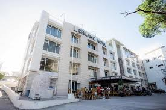

6. LeBlanc Hotel and Resort

Address: 3 Taktak Rd. Brgy Dela Paz, Antipolo, Rizal, Philippines, 1870
Price: Starts from Php 4,467/night (Single Deluxe - 1 Single Bed)
Situated only 30 minutes from the metro, LeBlanc Hotel and Resort entices guests with chic, elegant rooms. The types of rooms you can find here include Single, Twin, Deluxe, Junior Suites, and Premier Suite options.
What sets it apart is the function halls where guests can conveniently conduct private events like birthdays, meetings, reunions, weddings, or any gathering, complete with the hotel’s banquet and events team. On top of that, guests must enjoy the gastronomic creations at The Bistro Cafe or the in-house cocktails.

LeBlanc Hotel and Resort is an ideal venue for special occasions such as birthdays, weddings, and anniversaries. The property has indoor and outdoor facilities that can hold momentous events, regardless of the weather. In addition, there are business facilities with a projector and a photocopier.
LeBlanc Hotel and Resort is just beside Hinulugang Taktak. Ynares Center and Casa Santa Museum, on the other hand, are just 1.00 and 1.11 kilometers away from the property, respectively.